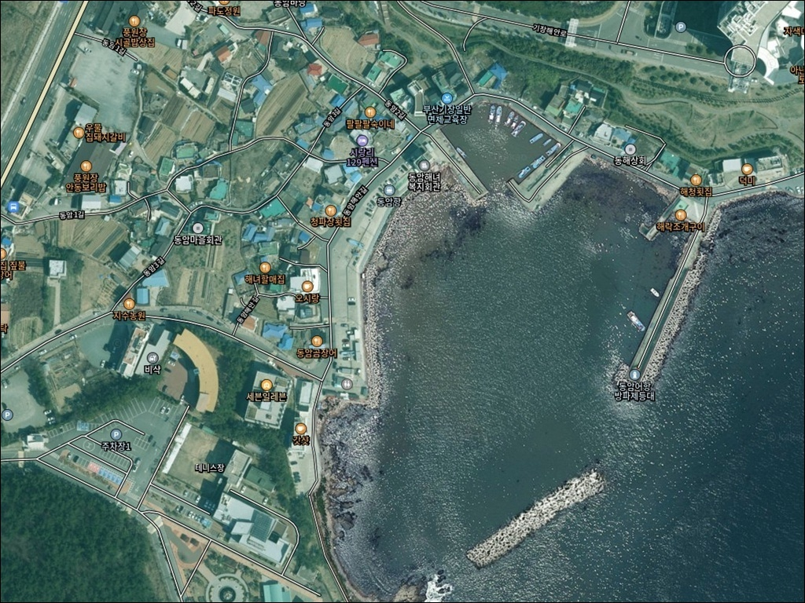
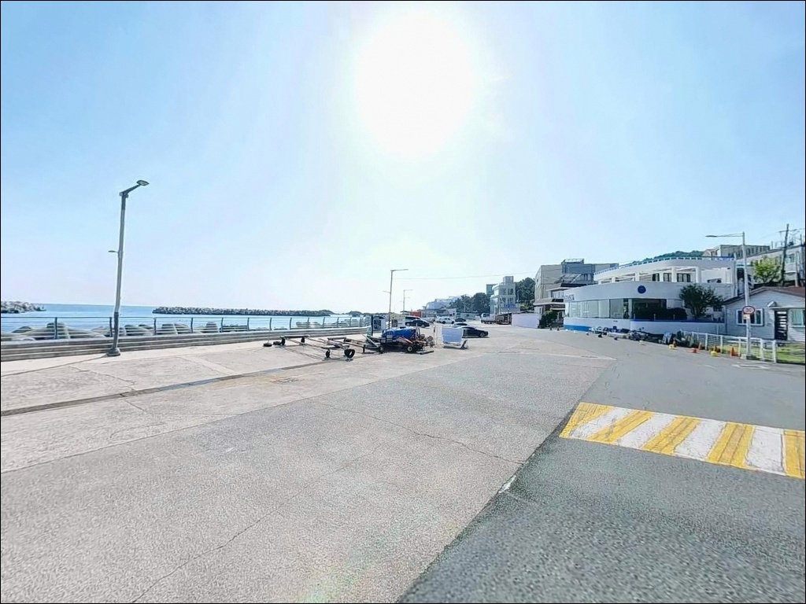
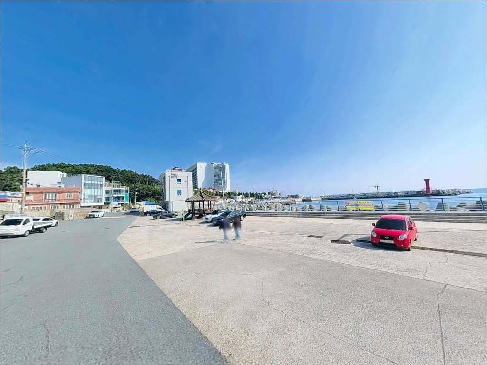
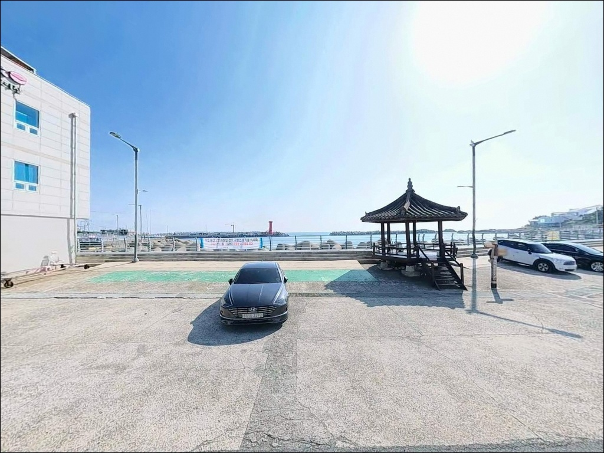
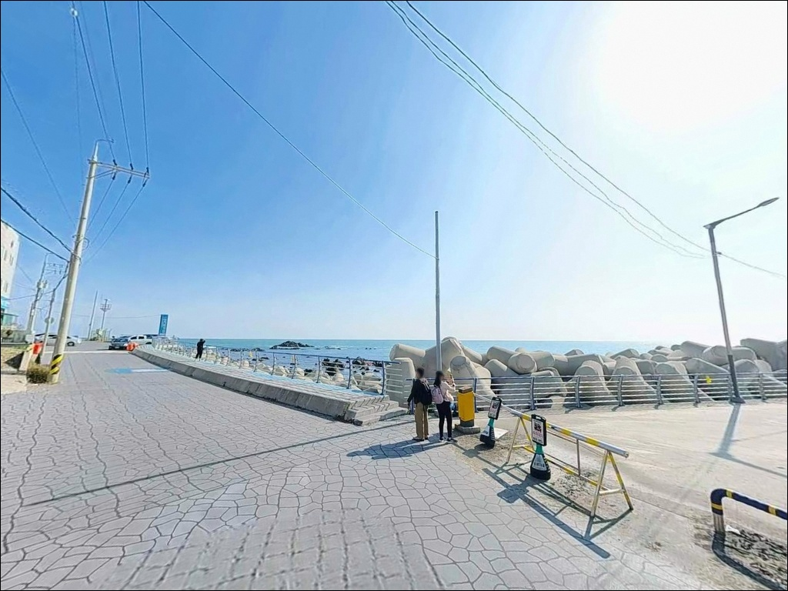
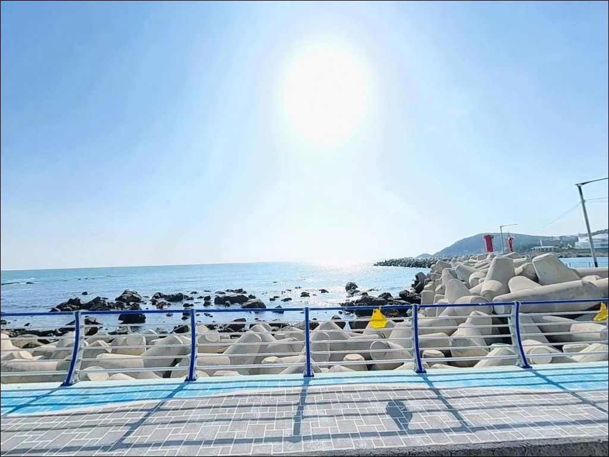
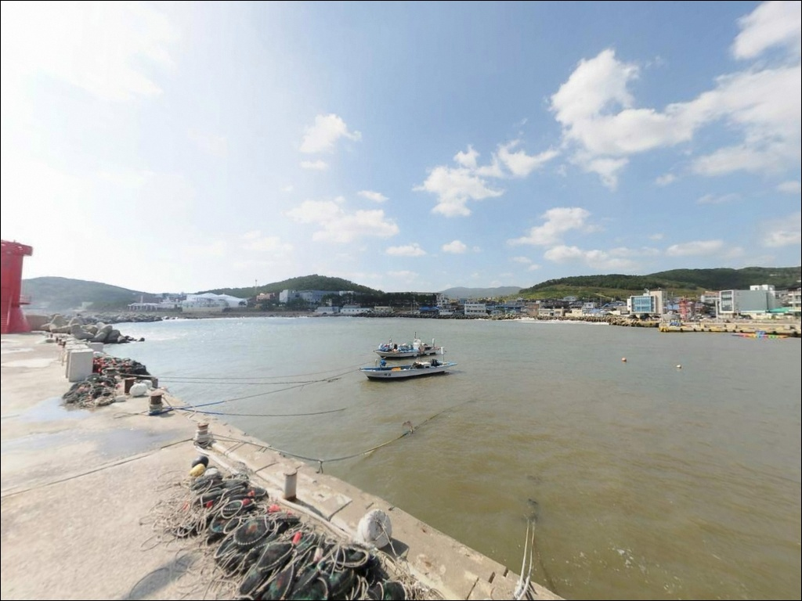
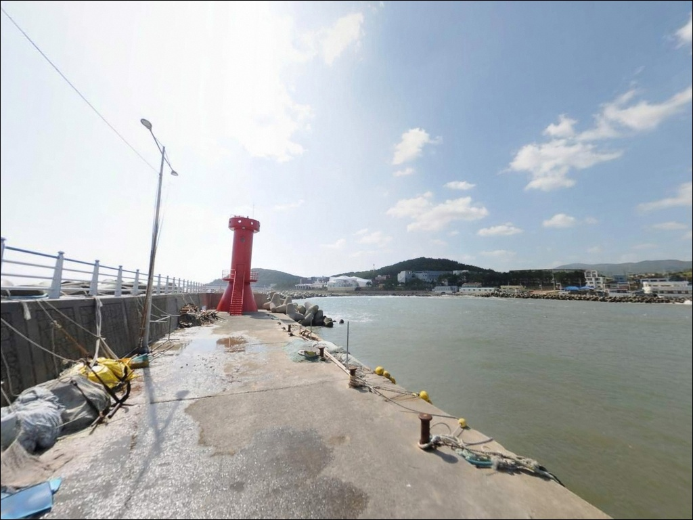
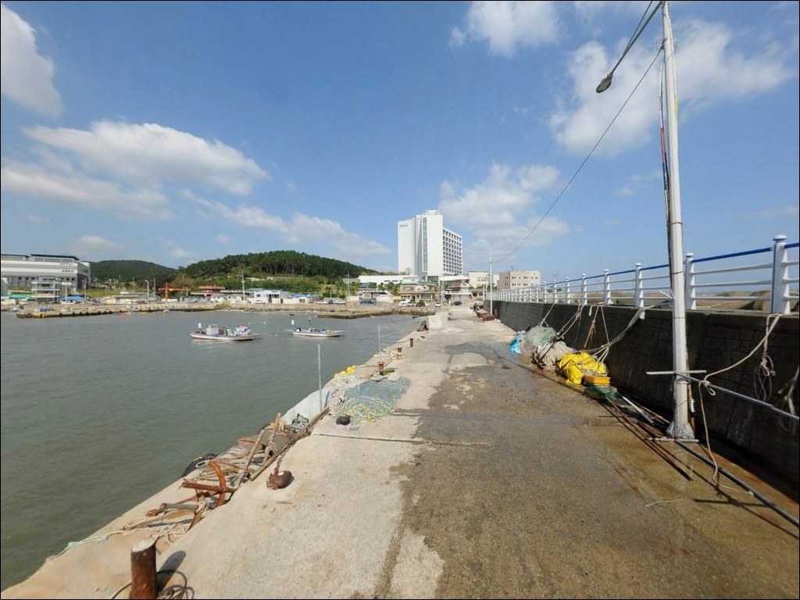

기장 동암방파제 야간 낚시, 조명 없는 외항 테트라포드 진입 시 주의점
이 페이지에는 광고(제휴 링크 포함)가 있으며, 광고 링크를 통해 구매하면 운영자가 판매 수익 또는 수수료를 받을 수 있습니다. 포인트 사진: 카카오맵 스카이뷰·로드뷰. 이 페이지의 지도·사진 이미지는 카카오맵의 실제 서비스 이미지와 다를 수 있습니다.


포인트 안내
동암항(동암방파제)
부산 기장군 기장읍 시랑리 664-6
동암항(동암방파제) 외항 테트라포드에서
밤낚시를 계획하고 갔다가
끝단까지 진입하지 못하는 경우가 실제로 있습니다.
야간에 조명 없이 테트라포드를 밟으면
이끼와 경사 구간에서 낙상 위험이 높고,
갯바위 고립 사고 사례도 이 일대에서
확인된 포인트입니다.
이 글은 동암항(동암방파제)의 구역별 구조,
진입 환경, 낚시 방식별 공략 조건을
중심으로 정리합니다.
조황 단정이나 특정 어종 보장은
이 글의 범위에 포함되지 않습니다.
낚시 여건, 지형 구조, 안전 판단 기준에
집중한 정보입니다.

1. 진입 동선과 포인트 접근성
동암항(동암방파제)은 기장해안로에서
동암마을 방향으로 꺾어 들어가는 구조입니다.
해동용궁사와 오랑대공원 사이 해안도로를 기준으로
마을 골목 안쪽으로 진입하게 되며,
진입로 폭은 1차선 수준으로 좁습니다.
포장도로이고 비포장 구간은 없지만,
캠핑카나 대형 SUV라면
위성지도로 경로를 미리 확인하는 편이 안전합니다.
항 내부에서의 회차는 물양장 주변 공터를
활용하는 방식이 일반적입니다.
소형 어항 구조 특성상 회차 공간이 넉넉하지 않아
대형 차량은 회차 가능 여부를 사전에 판단해야 합니다.
주차 후보는 물양장 앞 공터와
해안도로 갓길 두 곳이며,
전체 수용 가능 대수는 매우 제한적입니다.
시즌 주말에는 이른 시간 진입이 현실적인 대비입니다.

2. 차박 환경과 야간 체류 여건
동암항(동암방파제)의 차박 여건은
낚시 후 단기 주박 수준으로 보는 것이 맞습니다.
소규모 어촌정주어항으로 민가가 항구 가까이 인접해 있어
야간 소음 관리가 기본 매너입니다.
방파제 가로등은 마을 주변부에 있으나
외항 테트라포드 끝단부는 조명이 없어
야간 낚시 시 헤드랜턴은 필수입니다.
아난티 부산 등 고급 숙박시설이 인접한 지역이라
야간 고성방가는 각별히 자제해야 합니다.
기장 동해남부 해역은 북동풍이 강해지면
너울이 빠르게 높아지는 특성이 있어
바람 방향과 파고 확인은
출발 당일 아침에 다시 한 번 하는 것이 기본입니다.
차박을 메인으로 계획하는 경우,
주차 공간과 민가 접근성 면에서
이동항(약 8~9km 북쪽)이
더 여유 있는 대안이 됩니다.
오랑대공원 주차장(도보 약 1km)도
바다 조망이 뛰어난 단기 차박 후보입니다.


3. 주변 편의시설 및 인프라 현황
동암항(동암방파제)에서 북쪽 약 1.8km 거리에
GS25 기장연화리점이 있어
출조 전 간단한 보급이 가능합니다.
약 2.5km 북쪽 대변항 방면으로 이동하면
횟집 거리와 식당이 밀집해 있어
생미끼 구입과 식사를 함께 해결할 수 있습니다.
2022년 어촌뉴딜300사업 준공으로
방파제 보강, 물양장 신설,
해안 보행로 연결이 완료된 항구입니다.
오랑대공원 산책로와 해안길이
동암항(동암방파제)에서 도보 5분 이내로 연결되어 있어
낚시 외 시간을 보내기 좋은 환경입니다.
응급 상황 대비로 기장읍 의료기관까지는
약 3km 이상 거리이며,
현대오일뱅크 기장읍 내리점이
약 2.5km 방향에 있습니다.
연료와 비상약품은 출발 전에
미리 갖추는 편이 좋습니다.

4. 진입 전 반드시 챙겨야 할 준비사항
출조 전 가장 먼저 확인할 것은
기상청 해상예보와 파고 정보입니다.
기장 동해남부 해역은 북동풍 계절에
너울이 빠르게 높아지는 구조여서
전날 예보만으로는 부족합니다.
출발 당일 아침 기상 재확인이 필수이며,
파고가 높은 날에는 외항 테트라포드 접근을
과감하게 포기하는 판단이 안전합니다.
외항 테트라포드는 이끼와 경사 구간이 있어
주간에도 미끄럼 사고 위험이 있습니다.
구명조끼와 안전화는 테트라포드 진입 시
선택이 아닌 기본 장비입니다.
야간에는 헤드랜턴을 충분히 확보하고,
2인 이상 동행 구성이 안전 조건입니다.
어선 접안 구역인 물양장 근처에는
차량 주정차와 낚시를 삼가는 것이
기본 매너입니다.
갯바위 구간 진입 시에는
물때를 반드시 확인하고,
바다타임에서 시랑리 기준 조석 정보를
출발 전에 미리 확인하는 것이 좋습니다.

5. 동암항(동암방파제) 지형이 만드는 낚시 여건
동암항(동암방파제)의 포인트는
크게 두 구역으로 나뉩니다.
A구역(내항 제방)은 물양장 안쪽으로
수면이 잔잔하고 발판이 편안한 구조입니다.
평탄한 사니질 바닥이 이어지며
원투 채비가 안정적으로 운용됩니다.
가족 낚시나 처음 방문하는 경우
이 구역에서 자리를 잡는 것이
접근하기 쉽습니다.
B구역(외항 방파제 끝단)은
이 포인트의 본격 낚시 구간입니다.
테트라포드가 잘 발달해 있고,
방파제 끝단에서 조류가 갈라지는 구조로
어류 집결 구간이 형성됩니다.
수심은 방파제 외항 쪽 기준
8~12m대를 유지하며,
들물 시 외항에서 안쪽으로 밀려오는
조류를 공략하는 것이 효과적입니다.
도보 5분 거리의 오랑대 갯바위는
기암절벽과 암초 지형으로 이루어져
방파제와 성격이 다른 낚시 환경을 제공합니다.
수심 변화가 크고 조류 영향을 직접 받는 자리라
볼락·감성돔 루어낚시에
동암항(동암방파제)과 연계해 하루 운용이 가능합니다.
다만 군 초소 경계 구간이 있으므로
공원 안내 표지판 확인 후 접근해야 합니다.
출조 전 최신 조황은 검색해 보시기 바랍니다.


6. 구역별로 달라지는 낚시 스타일
루어낚시는 동암항(동암방파제)에서
가장 폭넓게 운용 가능한 방식입니다.
외항 테트라포드 홈통을
1~3g 지그헤드 웜으로 공략하면
볼락과 우럭이 반응하는 구간입니다.
농어는 방파제 끝단 조류 갈림목을
저조~만조 전환 시점에 집중 공략하는 방식이
이 포인트 구조에 맞습니다.
에깅은 기장 해역 전체에서
성립도가 높은 낚시 방식입니다.
방파제 끝단 외항과 오랑대 갯바위 접선부가
무늬오징어 에깅의 주요 구간이며,
가을 이후 수온이 내려가는 시점에는
집어등을 활용한 야간 호래기 낚시도
이 포인트에서 병행이 가능합니다.
찌낚시는 외항 테트라포드 외측에서
감성돔과 벵에돔을 대상으로 운용합니다.
방파제 꺾이는 지점 전후가
흘림낚시 자리로 유력합니다.
내항 물양장 쪽에서는
원투낚시로 붕장어·가자미·도다리를
바닥층 중심으로 노리는 방식이 어울립니다.

7. 대안 포인트와 플랜 B 동선
동암항(동암방파제)이 만원이거나
주차 여건이 여의치 않을 때
첫 번째 대안은 약 1.5km 북쪽의
서암방파제입니다.
동암항(동암방파제)과 대변항 사이에 위치한
소형 방파제로, 이동 거리가 짧아
빠른 이동이 가능한 플랜 B입니다.
더 큰 규모를 원한다면
약 2.5km 북쪽의 대변항 동방파제가 낫습니다.
방파제 길이 550m에 뜬방파제가 추가로 조성된
기장 최대 어항으로,
주차 공간과 인프라가 동암항(동암방파제)보다
여유가 있습니다.
감성돔·전갱이·고등어·삼치 등
어종 스펙트럼도 넓어
반나절 이상 낚시에 유리합니다.
차박 대안으로는
약 8~9km 북쪽 이동항이
주차 공간이 넓고 차박 인프라가
동암항(동암방파제)보다 양호합니다.
단기 조망형 차박이라면
오랑대공원 주차장을
동암항(동암방파제) 낚시와 연계해
활용하는 동선도 효율적입니다.

두 구역을 이해하고 들어가면
동암방파제가 달라 보입니다
루어·에깅·찌낚시·원투낚시까지
복수의 낚시 방식을 운용하고 싶은 낚시인이라면
동암항(동암방파제)의 두 구역 구조는
하루를 충분히 채울 수 있는 조건입니다.
도보 5분 거리의 오랑대 갯바위까지
함께 묶으면 포인트 다양성은
더 올라갑니다.
다만 주차 공간이 좁고
외항 테트라포드는 야간 접근에
각별한 주의가 필요한 포인트입니다.
해상예보 확인, 구명조끼 착용,
충분한 조명 준비가 갖춰진 상태에서
들어가야 이 포인트를
제대로 활용할 수 있습니다.
차박은 주박 개념으로 접근하고,
이른 시간 진입으로 주차 공간을 선점하면
기장 동해안 방파제 낚시와
조용한 어촌 마을의 밤을
함께 즐기기 좋은 출조가 됩니다.